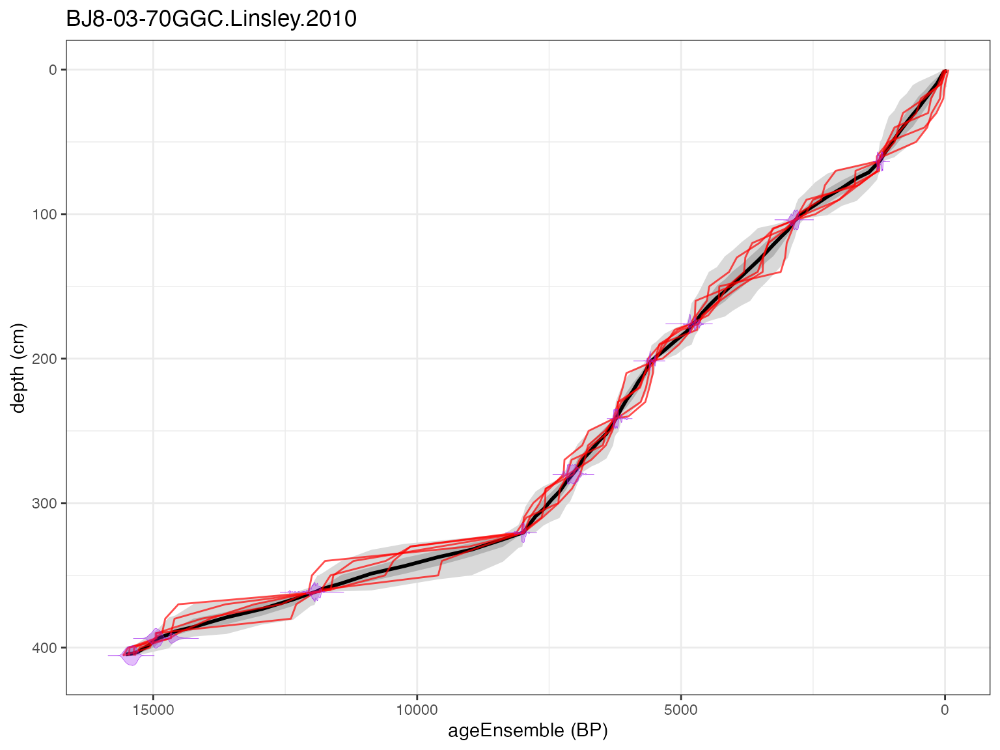

Use oxCal to create an age model
Setting up oxCal
The oxcAAR package provides efficient access from R to
the oxCal executables, which will need to be set up on your computer
before you can use it. Once it’s installed you won’t need to repeat this
step, just point to where it’s installed. If it’s already installed, it
will tell you.
quickSetupOxcal(path = "~/OxCal")
#> Oxcal doesn't seem to be installed. Downloading it now:
#> Oxcal stored successful at /Users/runner/OxCal!
#> Oxcal path set!
#> NULLOK, let’s get a LiPD file from the LinkedEarth Wiki:
L <- readLipd("https://lipdverse.org/geoChronR-examples/BJ8-03-70GGC.Linsley.2010.lpd")
#> [1] "Loading 1 datasets from /var/folders/h1/8hndypj13nsbj5pn4xsnv1tm0000gn/T//RtmpJ7m1so/BJ8-03-70GGC.Linsley.2010.lpd..."
#> [1] "reading: BJ8-03-70GGC.Linsley.2010.lpd"Now we can run it through oxcal. First, we specify our oxcal path,
then use the runOxcal function. Like the other
run{AgeModel} functions in geoChronR, you can leave the
parameters empty and specify the choicecs interactively, or you can
specify everything for replicability. For choosing the variable names,
if you did it interactively and would like to recall those choices, try
the getLastVarString function.
Here, in addition to the variable choices, there are a few key parameters to note. First, we specify a “static” reservoir age and uncertainty. You can use this if you want to apply the same deltaR (and uncertainty) to all the ages. Alternatively, these can be columns in the chron measurement tables.
Also, note that we’ve specified the surface age and uncertainty, as that was not included in the measurent table.
Finally, there are two more key parameters, the
depth.interval and the events.per.unit.length.
These have a substantial impact the output. The
depth.interval controls the spacing at which to calculate
the age model uncertainty distributions, and the
events.per.unit.length is the key parameter for the poisson
distribution. As the number events increases, the modeled sequence will
become more monitonic (linear) between ages. If you’re having trouble
getting OxCal to produce a valid model for your sequence, tinker with
these two parameters. Fewer events.per.unit.length and a
larger depth.interval will increase the flexibility of the
model and likelihood of convergence.
Optionally, you can set
events.per.unit.length.uncertainty to a positive number to
indicate a prior uncertainty estimate (in orders of magnitude) on
events.per.unit.length. This will tell OxCal to treat
events.per.unit.length as a variable and optimize it to fit
the data. This often returns better results, especially in the absence
of an informed prior on events.per.unit.length, but
greatly increases the run time (expect a run to take
multiple hours).
L <- runOxcal(L,
lab.id.var = 'id',
age.14c.var = 'age14c',
age.14c.uncertainty.var = 'age14cuncertainty',
age.var = 'calendarage',
age.uncertainty.var = 'calendarageuncertainty',
depth.var = 'depth',
reservoir.age.14c.var = NULL,
reservoir.age.14c.uncertainty.var = NULL,
rejected.ages.var = NULL,
static.reservoir.age = 70,
static.reservoir.age.unc = 50,
cal.curve = "intcal20",
oxcal.path = "~/OxCal",
surface.age = 0,
surface.age.unc = 25,
depth.interval = 10,
events.per.unit.length = .1)
#> Looking for laboratory ID
#> [1] "Found it! Moving on..."
#> Looking for radiocarbon ages
#> [1] "Found it! Moving on..."
#> Looking for 1-sigma radiocarbon age uncertainty (+/-)
#> [1] "Found it! Moving on..."
#> Looking for calibrated/calendar ages
#> [1] "Found it! Moving on..."
#> Looking for 2-sigma calibrated age uncertainty (+/-)
#> [1] "Found it! Moving on..."
#> Looking for depth or position
#> [1] "Found it! Moving on..."
#> Looking for radiocarbon reservoir age offsets (deltaR)
#> radiocarbon reservoir age offsets (deltaR) does not seem to exist, moving on.
#> Looking for radiocarbon reservoir age offsets (deltaR) uncertainties
#> radiocarbon reservoir age offsets (deltaR) uncertainties does not seem to exist, moving on.
#> Looking for rejected ages
#> rejected ages does not seem to exist, moving on.
#> [1] "Variable choices for reuse..."
#> For future reference: here are the options you chose:
#> Find later with getLastVarString()
#> lab.id.var = 'id', age.14c.var = 'age14c', age.14c.uncertainty.var = 'age14cuncertainty', age.var = 'calendarage', age.uncertainty.var = 'calendarageuncertainty', depth.var = 'depth', reservoir.age.14c.var = NULL, reservoir.age.14c.uncertainty.var = NULL, rejected.ages.var = NULL,
#> Oxcal is now running, depending on your settings and your computer, this may take a few minutes to several hours. The model is complete when a table of model diagnostics appears.
#> Great. After OxCal finishes running successfully, it will return this table showing some diagnostics of the MCMC statistics for the dated levels. If the table is empty, that’s a sure sign that there was an error in your run.
Now that the age model has been generated, you can plot your age
model with plotChronEns, just like with the other
methods.
plotChronEns(L)
#> [1] "Found it! Moving on..."
#> [1] "Found it! Moving on..."
#> [1] "plotting your chron ensemble. This make take a few seconds..."
To map the the age ensembles onto the proxy data, use
mapAgeEnsembleToPaleoData:
L <- mapAgeEnsembleToPaleoData(L,age.var = "ageEnsemble")
#> [1] "BJ8-03-70GGC.Linsley.2010"
#> [1] "Looking for age ensemble...."
#> [1] "Found it! Moving on..."
#> [1] "Found it! Moving on..."
#> [1] "getting depth from the paleodata table..."
#> [1] "Found it! Moving on..."
#> mapAgeEnsembleToPaleoData created new variable ageEnsemble in paleo 1 measurement table 1
#> mapAgeEnsembleToPaleoData also created new variable ageMedian in paleo 1 measurement table 1Finally, let’s select the ageEnsemble and the SST variables…
ageEns <- selectData(L,var.name = "ageEnsemble")
SST <- selectData(L,var.name = "SST")And plot up the output.
plotTimeseriesEnsRibbons(X = ageEns, Y = SST) %>%
plotTimeseriesEnsLines(X = ageEns, Y = SST,n.ens.plot = 10)
#> Scale for x is already present.
#> Adding another scale for x, which will replace the existing scale.
It looks reasonable, so we can now proceed to use this ensemble like any other.
Happy modeling!